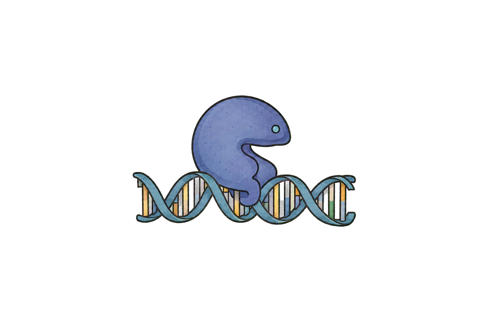
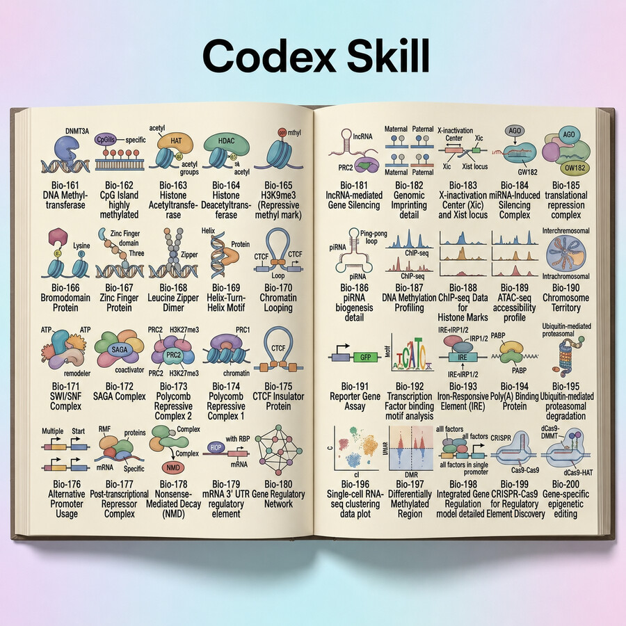
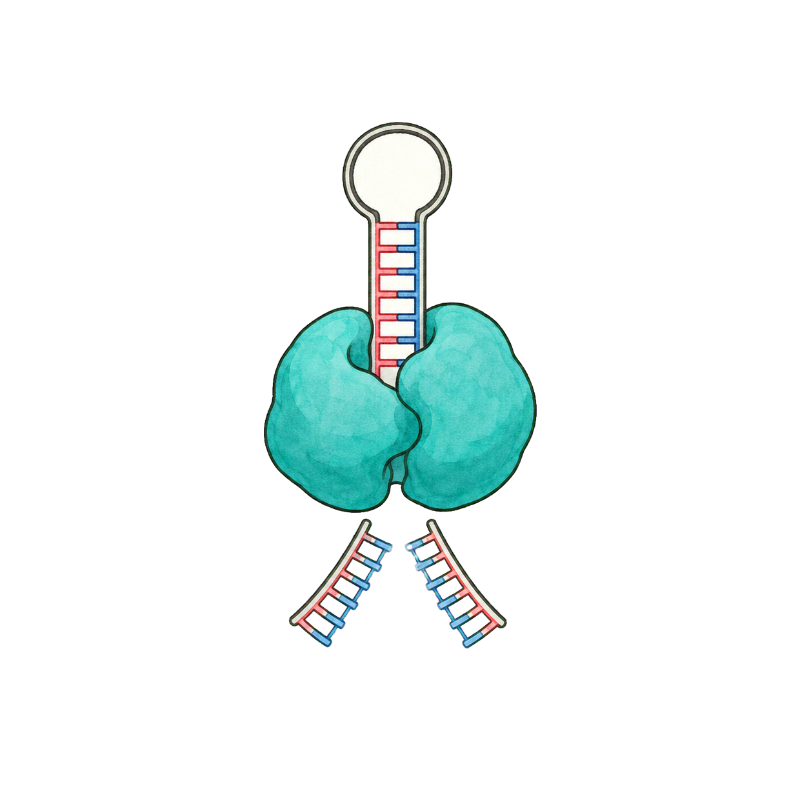
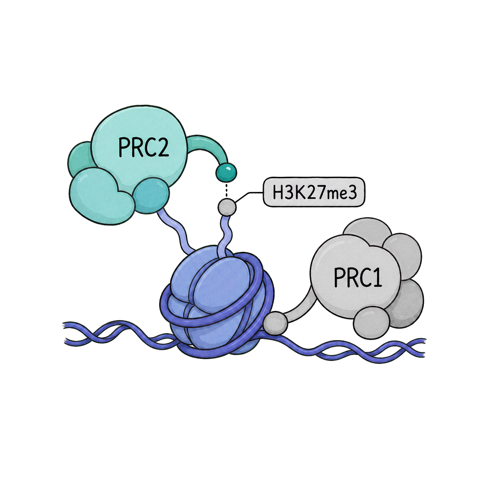

01Redraw and edit figures
Rebuild supplied diagrams with improved hierarchy, accuracy, and visual consistency.
Scientific illustration, reimagined
Create and redraw rigorous molecular-biology figures in a coherent, editorial textbook style with OpenAI Codex.

Core capabilities

01Rebuild supplied diagrams with improved hierarchy, accuracy, and visual consistency.

02Turn a precise biological description into a structured, publication-ready illustration.
Use curated forms for DNA, RNA, proteins, complexes, regulatory elements, and pathways.

04Produce clear scientific labels in English or Bulgarian with consistent typographic rules.
Featured examples
A focused workflow
Provide the entities, labels, relationships, panel order, or a source figure.
Use the visual atlas, detailed rendering, or ref mode when the source should provide facts only.
Receive a coherent textbook figure and iterate on the scientific or visual details.
$book-figure redraw this figure, use ref mode, language=bgResearch metadata
If you use this code and skill, please cite:
Baev, V. (2026). vebaev/book-figure-skill: Codex Skill for Molecular Biology Textbook Figures (Version 1.3.0). Zenodo.
CC BY-NC-ND 4.0 — attribution required; non-commercial sharing only; no distributed adaptations.